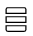

Managing community files
Use the Files app to work with the files that members upload and share with your community. You must have Editor or Owner access.
Managing versions of a file
You can restore and download versions of a file and view the change summary of a version. You can also upload a new version of a file.
- From the navigation bar, click Communities and select the community whose files you want to manage.
- In the community menu, click Files and click the file name to open its summary page.
-
To view available versions, click Versions. Then perform any of the following tasks:
-
To upload a new version: Click Upload New Version and select the file that you want to upload from your local system. You can also provide a brief description of the change.
Note: Uploading a new version does not apply to HCL Docs files.
-
To download a version: Hover your cursor over the version you want to download, then click the download icon beside it.
-
To restore a previous version: Hover your cursor over the version you want to restore, then click the restore icon
Note: Restoring a previous version does not apply to HCL Connections™ Docs files.
-
Delete a version: Hover your cursor over the version you want to delete, then click the delete icon .
-
Editing file properties
Update the name, extension, or description of a file.
- From the navigation bar, click Communities and select the community whose files you want to manage.
- In the community menu, click Files and then All Community Files in the side panel.
- Select the list view

, and then More next to the file you want to edit. - Click More Actions and select Edit Properties from the list.
- Edit the available properties as needed, and then click Save.
Following a file
Get notifications for when the file changes.
- From the navigation bar, click Communities and select the community containing the file you want to follow.
- In the community menu, click Files and locate the particular file that you want to keep tabs on.
- Select the list view , and then More next to the file.
- Click More Actions and select Follow from the list.
Deleting a file
Deleting a file only moves it to the trash and makes it unavailable to people with whom it is shared. It is not immediately deleted. The file remains in the trash view until a community owner either restores it or permanently deletes it.
- From the navigation bar, click Communities and select the community containing the file you want to follow.
- In the community menu, click Files then perform any of the following actions:
- To delete a file:
- In the side panel, click All Community Files.
- Select the list view , and then More next to the file you want to delete.
- Click More Actions and select Move To Trash from the list.
- To restore or permanently delete a file:
- In the side panel, click Trash.
-
Click the arrow next to the file that you want to restore or delete, and select either Restore or Delete from the list.
Note: If you permanently delete a file, you cannot undo the action.
- To delete a file:
Locking a file
Prevent others from editing a file.
- From the navigation bar, click Communities and select the community containing the file you want to lock.
- In the community menu, click Files and then All Community Files in the side panel.
- Select the list view , and click More next to the file that you want to lock.
- Click More Actions and select Lock File from the list. If the file is already locked and you want it unlocked, click Unlock File.
Moving a file from one folder to another
- From the navigation bar, click Communities and select the community containing the file you want to move.
- In the community menu, click Files and then All Community Files in the side panel.
- Select the list view , and then click More next to the file you want to follow to show more options.
- Click Add to Folder and select the folder you want to move the file into.
-
Click Add Here.
Tip: Want an easier way to move files? Just select one or multiple files or folders and drag them to another folder in the side panel. As long as you have Editor or Owner access, you can drag and drop personal or community files and folders.
Parent topic:Enhancing collaboration